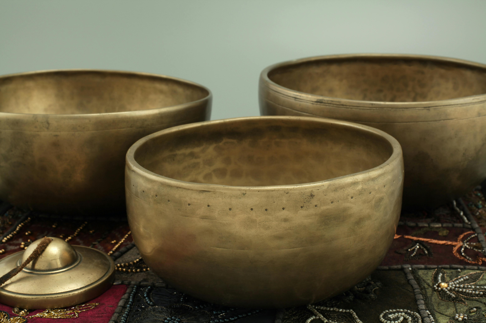
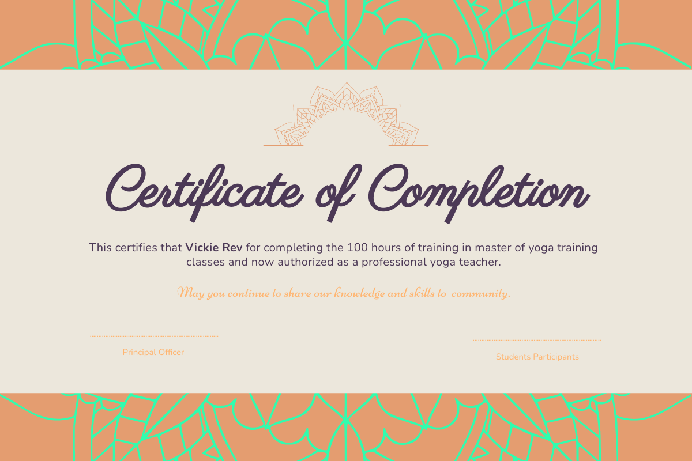

Sound Healing Teacher Training Program
Why Sound Healing?
Sound healing is an ancient practice that uses vibrational frequencies to restore harmony in the body, mind, and spirit. Everything in the universe is energy, and every cell in our body resonates at a certain frequency. When stress, trauma, or imbalance disrupts our natural frequency, sound healing can help realign and restore that balance.Sound travels through water five times faster than through air, and since our bodies are about 70% water, sound waves penetrate deeply, promoting profound healing on a cellular level. This is why sound healing is so effective in reducing stress, releasing energetic blockages, and promoting deep relaxation.
Sound healing is a holistic practice using instruments like singing bowls, gongs, and tuning forks to restore balance to the mind, body, and spirit.
Through gentle vibrations and frequencies, sound healing helps synchronize brainwaves for clarity, activate the parasympathetic nervous system to support deep healing, and release emotional blockages stored in the body. This transformative practice promotes deep relaxation, improved sleep, emotional balance, physical healing, and heightened spiritual awareness. By realigning the body’s energy centers and calming the nervous system, sound healing fosters a profound sense of peace, vitality, and overall well-being.
CLASSES

֍ Introduction to Sound
֍ History, benefits and science behind sound healing
֍ Description about singing bowls.
֍ Techniques to play the bowls and guidance on how to choose the bowl.
֍ Instruments used in sound healing
֍ Understanding about Chakras and Aura
֍ The power of intention
֍ Aura protection using singing bowls
֍ Self-healing therapies based on 7 chakras
֍ Mind Relaxation Technique.
֍ Techniques for Facilitating Private sound healing sessions
֍ Ethics and responsibility as a sound healer
֍ Integrating Sound Healing with Yoga, Meditation & Breathwork .
֍ Therapies based on all 7 chakras and understanding how chakras are related to our body system.
֍ 7 chakra balancing therapy
֍ Brainwave relaxation, Physical and Mental therapy
֍ Water charging method
֍ Space cleansing
֍ Learning about sound healing instruments such as Chimes, Rain stick, Ocean drum, Thingsha etc
֍ Therapy for back pain, Sciatica etc
֍ Hand & Foot reflexology
֍ Therapy for joints
֍ Couple Therapy
֍ Group Healing/Sound Bath
֍ Ideas of designing Transformational Sound Healing Workshops & Retreats
Become part of our community and elevate your journey.
Are you ready to step into the world of vibrational healing and share this powerful practice with others? Enroll today and step into the world of vibrational healing!
LEVEL 1
Basics
Rs 10,000/-
2 days, 6 hours
By the end of Level 1: You will have an understanding of how to use sound for your own healing, relaxation, and energy balance.
LEVEL 2
Intermediate
Rs 12,000/-
2 days, 6 hours
By the end of Level 2: You will have the knowledge and experience to offer professional sound healing sessions for clients and workshops.
LEVEL 3
Advance
Rs 15,000/-
3 days, 9 hours
By the end of Level 3: You will be fully equipped to lead professional sound healing sessions, workshops, and retreats, and even train future sound healers.
Certification & Practical Training

This training offers immersive, hands-on experience with various sound healing instruments, allowing you to build confidence through real-life case studies and experiential learning. As part of your final assessment, you'll lead a sound healing session, demonstrating your understanding and skills. Upon successful completion, you'll receive a Sound Healing Certification, empowering you to share this transformative practice professionally.